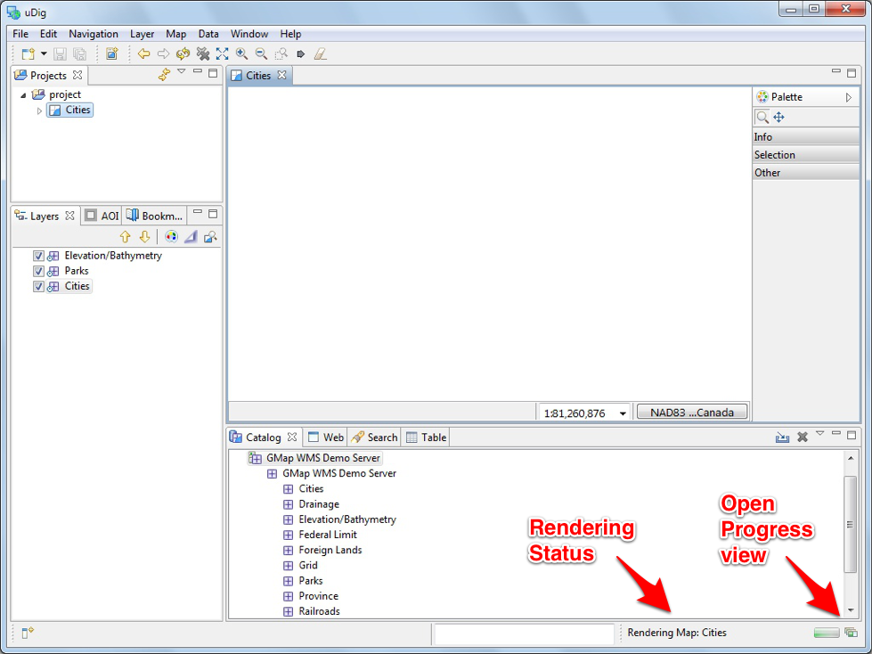
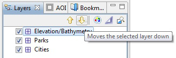

Connecting to a Web Map Server¶
In this section you will learn how to drag and drop a Web Map Server (WMS) link into uDig for the purpose of viewing its layers.
There are many ways to load map data into uDig, including drag and drop.
To demonstrate we will use the DM Solutions WMS Web Map Service.
The Web Map Service protocol is used to publish layers of information.
- We are going to use a link to the GetCapabilities document which lists the available layers:
-
This link is also avaialble from the Walkthrough 1 page: Walkthrough 1
For most browsers you can simply drag the link into the Layers view

If your browser does not support dragging layers please copy the link and then select the Layers view and paste.
The latest version of Internet Explorer and Opera do not support dragging URLs into other application.
If working with your windows maximized: Drag from the web browser, over to the uDig application in the task bar (to switch applications), and then drop into the Layers view.
The Add Layers wizard will appear asking you what layers from this WMS you want to show in your map. Select Elevation/Bathymetry, Parks, Cities and press the Finish button.

The map layers will now render in the Map editor.

Map Editor¶
The Map editor is used to display a map on screen. You can open several Maps and the Layers view will list the contents of the currently selected editor.
The Map editor is used to display the visible layers.
Map interaction is controled by the selected Tool in the Palette on the right hand side of the screen.
Try the navigation tools along the top of the tool Palette.
 Zoom (keyboard short cut z)
Click or drag the left button to zoom in, or right button to zoom out.
Zoom (keyboard short cut z)
Click or drag the left button to zoom in, or right button to zoom out. Pan (keyboard short cut p)
Click and drag to move the display.
Pan (keyboard short cut p)
Click and drag to move the display.
Several shortcuts are always available:
- Mouse Wheel: used to zoom in and out quickly
- Middle Button: Used to quickly pan the display
The Palette organises tools into drawers according to function.

- You can open and close the drawers by clicking on their title.
- Drawers will close automatically as you switch between drawers. Although you can also pin a drawer open for easy access.
- Available tools change depending on the currently selected layer
Right click on a drawer to customise the size of the icons used; and how much information is displayed in the Palette.

The Map editor lists common commands in the toolbar along the top of the screen.
 Extent: zoom out to show all enabled layers
Extent: zoom out to show all enabled layers Zoom In
Zoom In Zoom Out
Zoom Out Stop Rendering
Stop Rendering Refresh Map
Refresh Map
Press the
Refresh button, and watch the processing information
displayed in the bottom right corner of the workbench.
- Description and progress bar indicate rendering status
- Button to open the Progress view providing more detail when several layers are rendering at once and the ability to cancel any long running activities.
The Layers view shows the order in which layers are drawn. Please select the Elevation/Bathymetry layer and use the Move down button from the Layer view toolbar to move selected layer to the bottom of the list.

Drag and Drop You can also drag layers up and down in the layer view to change the order.
The order is now changed.

You can also use the checkboxes next to each Layer to turn them on and off.